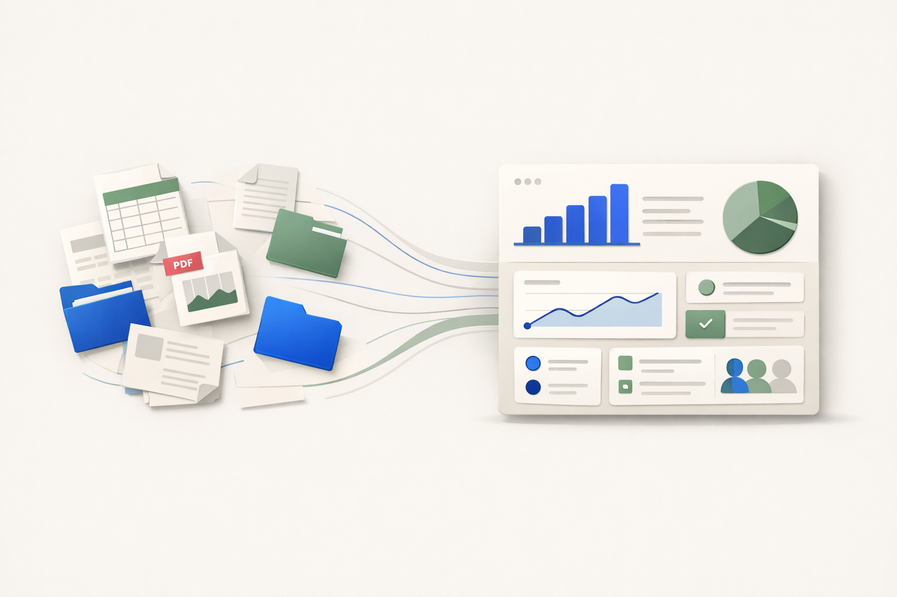
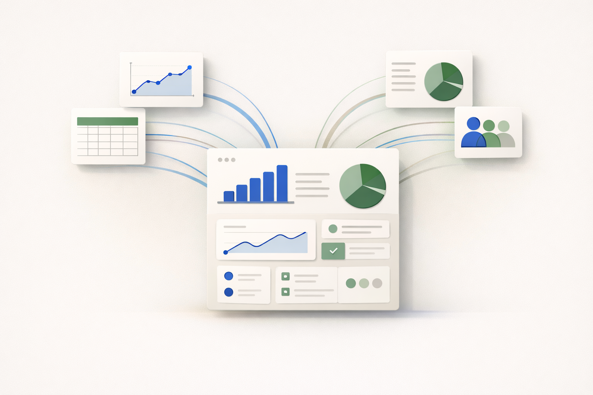
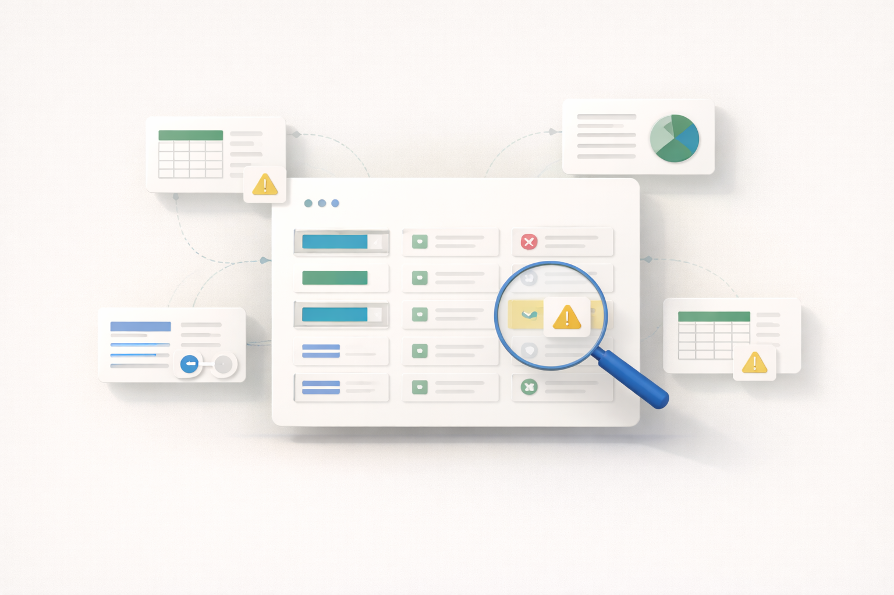
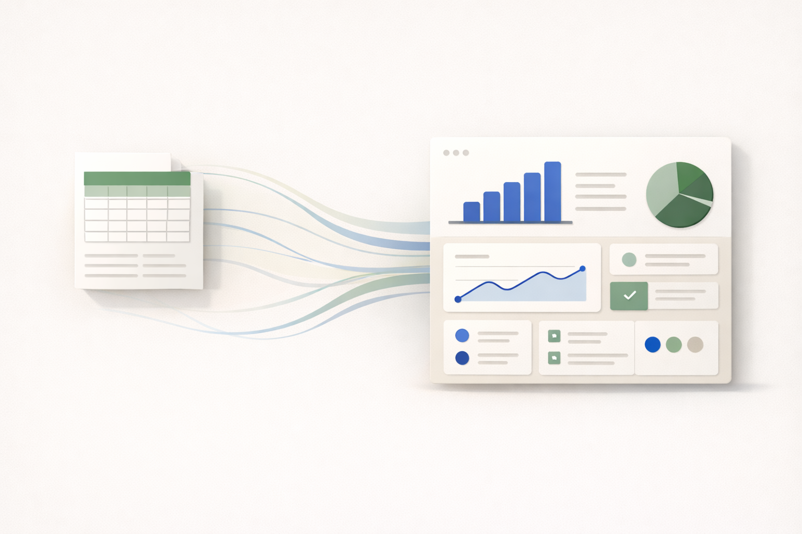
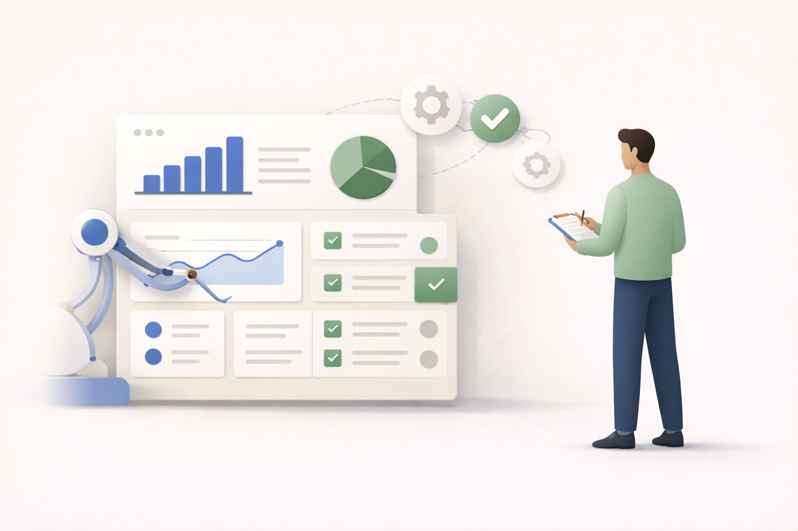

Procesos administrativos
Solicitudes, aprobaciones, pagos, compras, documentación y tareas que pasan por varias áreas.
Ayudamos a pequeñas y medianas empresas a comprender, mejorar y controlar sus procesos. Combinamos ingeniería, análisis y soluciones digitales para reducir tareas innecesarias, errores y falta de trazabilidad.
Primera conversación exploratoria, sin costo y sin compromiso.
Primero comprendemosPartimos de cómo funciona realmente tu empresa.
Mejoramos con criterioPriorizamos cambios útiles y aprovechamos mejor los recursos existentes.
La tecnología acompañaLas herramientas apoyan el trabajo y el criterio de las personas.
En muchas organizaciones, las dificultades no aparecen por falta de esfuerzo, sino porque los procesos han crecido sin una estructura que permita coordinarlos, medirlos y mejorarlos. Con el tiempo, ciertas situaciones comienzan a repetirse:
RetrabajoSe repiten tareas y revisiones que podrían simplificarse o evitarse.
Errores manualesLa información se ingresa, procesa o valida varias veces.
Poca trazabilidadCuesta saber en qué estado está cada actividad y quién es responsable.
Dependencia de personas claveEl funcionamiento depende demasiado de determinadas personas.
Trabajamos con distintas áreas y sectores. Nos enfocamos en procesos que necesitan coordinación, información confiable, seguimiento y reglas claras.

Solicitudes, aprobaciones, pagos, compras, documentación y tareas que pasan por varias áreas.

Asignación de tareas, atención de requerimientos, mantenimiento, seguimiento y cumplimiento.

Planillas desconectadas, consolidación manual, reportes tardíos y falta de indicadores.

Procesos sin responsables claros, actividades sin seguimiento y dificultades para detectar desviaciones.

Antes de agregar herramientas, buscamos hacer mejor lo que ya existe.
Muchas organizaciones no necesitan incorporar más herramientas o tecnología. Necesitan comprender mejor sus procesos, ordenar sus recursos y aprovechar las capacidades que ya tienen.
En EuTek creemos que toda mejora debe partir por entender cómo funcionan realmente las cosas. Primero identificamos oportunidades para simplificar, reorganizar y optimizar. Luego, cuando es necesario y aporta valor, incorporamos tecnología para facilitar el trabajo y fortalecer los resultados.
Nuestro principio
No buscamos incorporar más cosas, sino conseguir que lo que ya existe funcione mejor. Y cuando hace falta algo nuevo, nos aseguramos de que realmente aporte valor.
Podemos acompañarte en una etapa específica o trabajar el ciclo completo, según las necesidades y capacidades de tu empresa.
01 · Diagnóstico — EuTek Insight
Identificamos dónde están las oportunidades.
Puede incluir02 · Rediseño — EuTek Optimize
Simple y controlable.
Puede incluir03 · Implementación — EuTek Evolve
Con apoyo de tecnología cuando aporta valor.
Puede incluirEl alcance se define según el proceso, los objetivos y los recursos disponibles. No recomendamos desarrollar tecnología si el problema puede resolverse de forma más sencilla.
Un ciclo continuo de comprensión y mejora. Cada organización tiene una realidad distinta, por eso no partimos de soluciones predefinidas.
Un ciclo, no una receta.
La mejora puede comenzar con un cambio en la forma de trabajar, aprovechar mejor una herramienta existente o incorporar una nueva solución si realmente hace falta.
Nuestra experiencia combina análisis de procesos, gestión de información y desarrollo de soluciones digitales.
Conciliación y validación de información.
Procesamiento de planillas y documentos, detección de diferencias y clasificación de casos que requieren revisión.
Seguimiento de actividades y mantenimiento.
Visualización de estados, responsables, ubicaciones e información relevante para apoyar la gestión.
Indicadores y análisis de datos.
Transformación de datos operacionales en reportes y tableros para facilitar el seguimiento y la toma de decisiones.
He trabajado durante más de 15 años en procesos y más de 10 de ellos en el sector bancario, donde el manejo riguroso de la información y la trazabilidad son parte del trabajo cotidiano. Mi experiencia integra análisis de procesos, proyectos tecnológicos, datos y desarrollo de soluciones digitales.
Fundé EuTek para acercar esa combinación de capacidades a empresas que necesitan mejorar su operación sin asumir proyectos tecnológicos innecesariamente complejos.
Confianza desde el primer contacto.
Escuchamos primero. Entendemos el contexto y las necesidades antes de recomendar una solución.
Alcance transparente. Definimos objetivos, entregables, responsabilidades y plazos antes de comenzar.
Cuidado de la información. Solicitamos la información necesaria y acordamos cómo se utilizará y resguardará.
No. Trabajamos con pequeñas y medianas empresas que necesitan ordenar, mejorar o controlar procesos y que buscan soluciones acordes a su escala.
No necesariamente. Primero evaluamos cómo funciona tu operación y qué herramientas utilizas. La solución puede aprovechar lo que ya existe o incorporar algo nuevo si está justificado.
Depende del alcance y la complejidad del proceso. Después de comprender la necesidad, proponemos etapas, entregables y plazos.
El valor depende del proceso y del trabajo requerido. La primera conversación es exploratoria; luego podemos preparar una propuesta con alcance, plazo y precio definidos.
Antes de solicitar antecedentes, acordamos qué información es necesaria, para qué se utilizará y cómo se manejará durante el proyecto. Los compromisos específicos de confidencialidad y seguridad se establecen según cada servicio.
Cuéntanos qué proceso te gustaría mejorar. Podemos comenzar con una conversación breve para entender el desafío y evaluar si EuTek puede ayudarte.
La primera conversación es exploratoria y no implica compromiso de contratación. Si existe una oportunidad concreta, definiremos juntos el siguiente paso.
También puedes coordinar una conversación directamente con Joaquín.